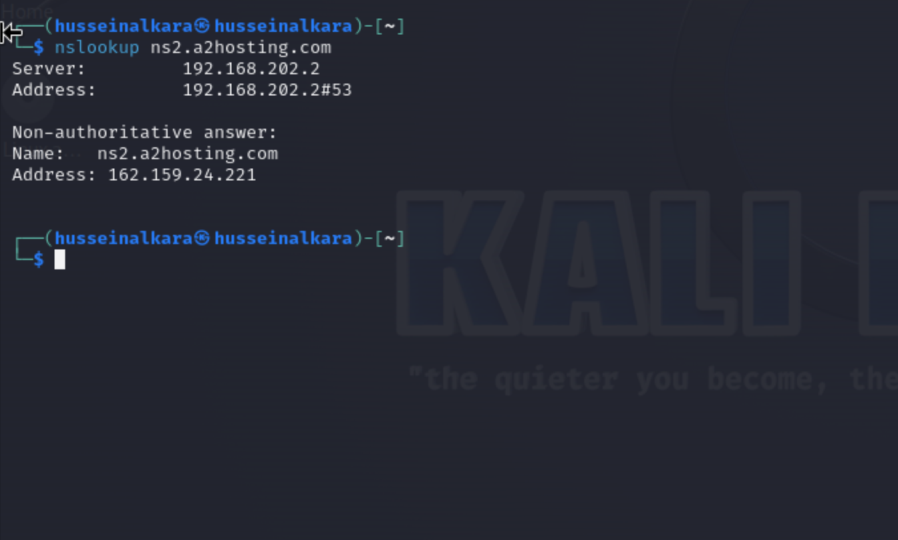

Performing a basic scan using standard tools such as traceroute, dig, and nslookup.
1 / 3
Step 1: Finding out how many hops from my machine to the assigned website(daedalus-systems.co.uk)
2 / 3
Step 2: Finding out which hop shows the most significant delay. Hop 9 (9 301-fra-col-2---34-ebgp-acibadem-sr12e-k.statik.turktelekom.com.tr (212.156.101.230) 57.407 ms 57.379 ms 57.351 ms
) shows the most significant delay with an average duration is 57.379. Duration? Time taken for packets to travel from my source to the spicified location.
3 / 3
Step 3: Finding the primary nameservers for the website (daedalus-systems.co.uk).
3 / 4

Step 4: Using NSlookup command to find the Ip addresses of the nameservers.
3 / 4
Step 5: Whois (command) Provides information about domain registration and IP address allocations
3 / 4
step 6: Finding out what the MX record of the website(daedalus-systems.co.uk) is. Command: nslookup -type=mx daedalus-systems.co.uk